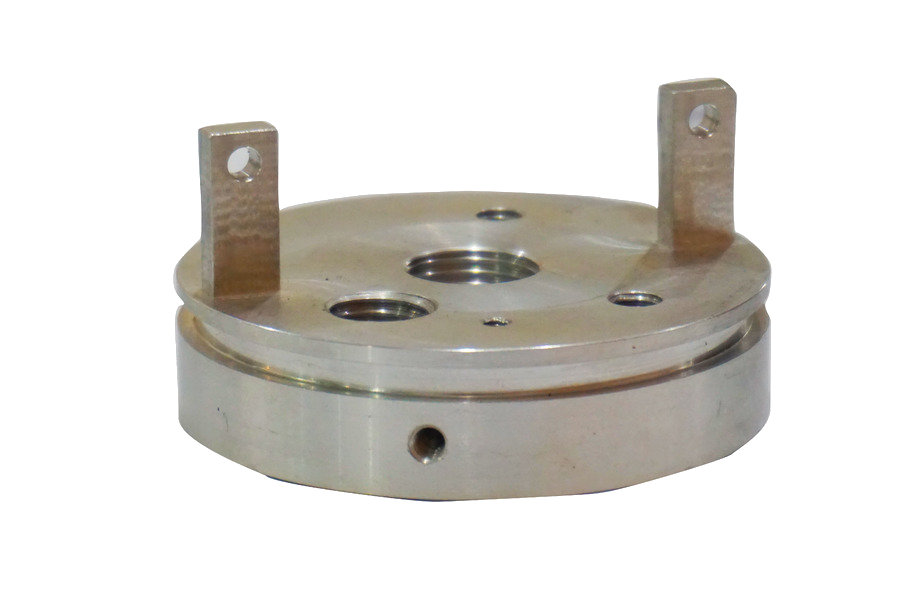

鼎鏈科技
對接全球客戶、理解專案需求、整合多製程供應鏈，負責品質、交期與溝通。
製造整合平台DINGLIAN × JINTAT
對接全球客戶、理解專案需求、整合多製程供應鏈，負責品質、交期與溝通。
製造整合平台成立於 2005 年，提供 CNC 車削、銑削、車銑複合、CMM 與 Keyence 量測能力。
核心製造基地ONE-STOP CAPABILITIES
從單一精密零件到跨製程組件，減少採購管理多家供應商的時間與風險。
車削、銑削、車銑複合，支援原型與高混低量。
REAL MANUFACTURING CASES
依照產業分類瀏覽現有案例；不使用 AI 示意圖。
QUALITY / 100%

QUALITY ASSURANCE
依需求提供材質證明、關鍵尺寸量測報告、CMM 與 Keyence 檢驗支援，建立清楚的追溯紀錄。
START A PROJECT
提供圖面、材料、數量與交期需求，我們將協助評估製程與報價。
info@dinglian-tech.com